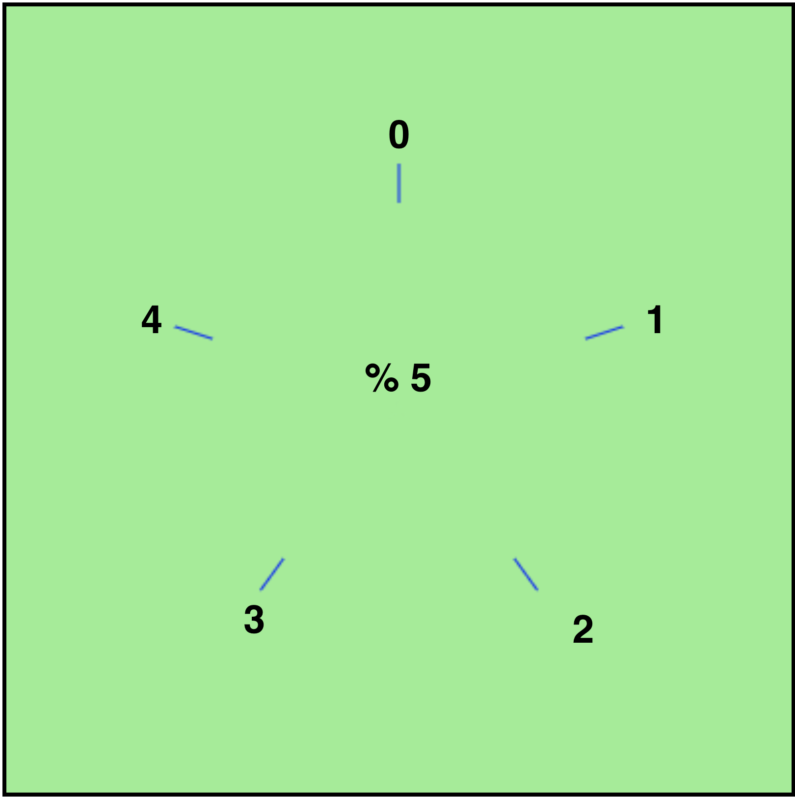
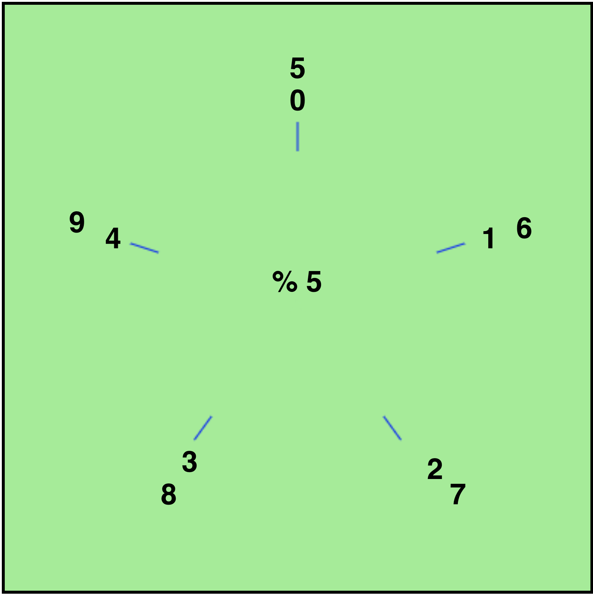
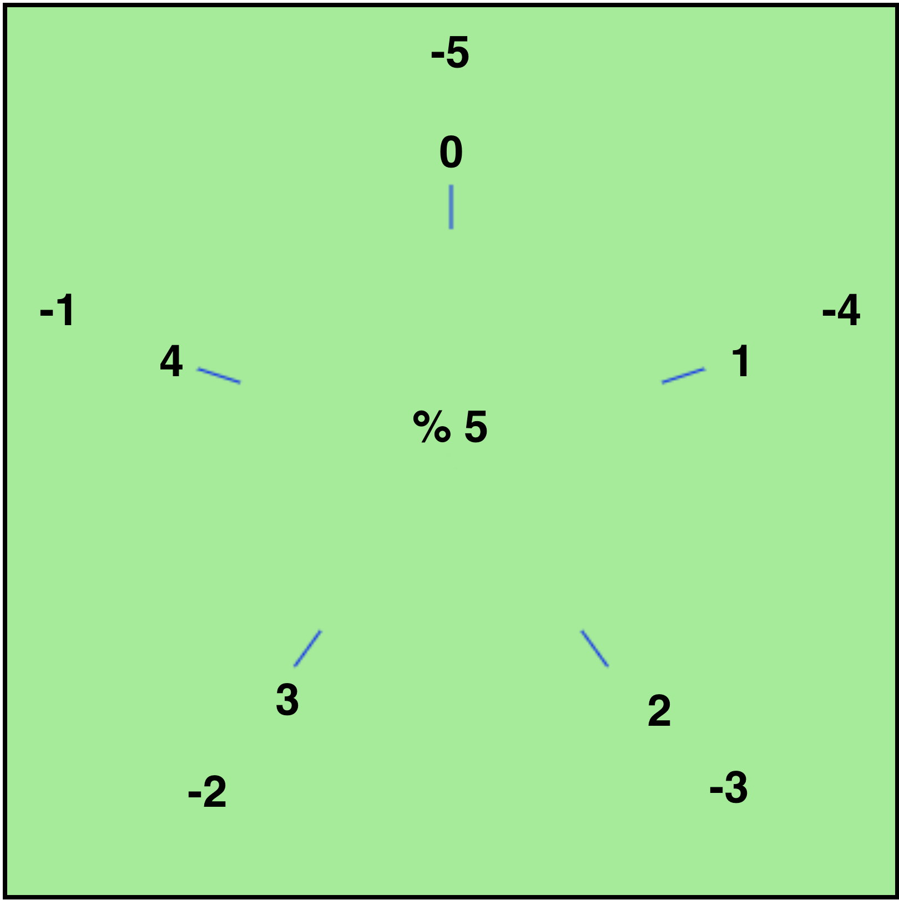
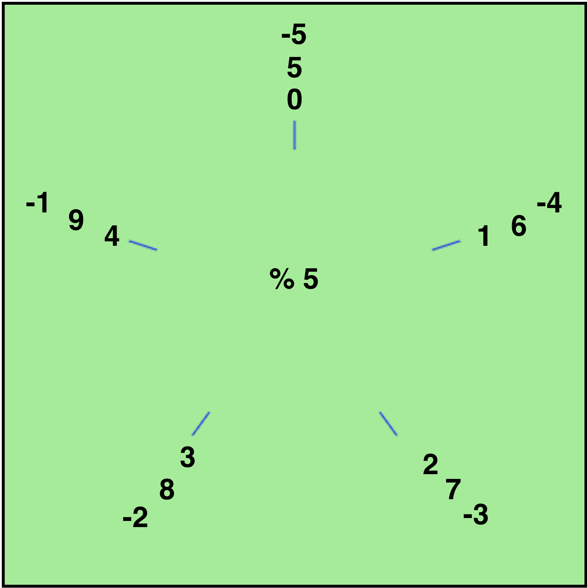

class: center, middle # Unit 1 ## Fundamentals of Programming --- ### My Journey with LaunchCode - CodeCamp to "Apprenticeship" - ...waiting period... (Uncommon) - TA Open Access - Instructing Unit 2 - Why I Love LaunchCode! - Slack: Aleesha.isInstructor() --- ### Expectations - Do all the class prep - Be on time - Communicate with you TA ([Slack](https://lc101-ofallon-2018.slack.com)) - Participate --- ### Random LC101 Info - Download and learn to use [Slack](https://lc101-ofallon-2018.slack.com) today - Learn to use Vocareum (we can help out on this) - You are responsible for Class Prep. We have no way of checking this. - [Canvas](http://learn.launchcode.org) (learn.launchcode.org) monitors completion of: - small assignments, - large assignments, - the Code of Conduct, and - the LC101 Agreement --- ### Structure of Unit 1 Classes 1. Studio Solution 1. "Lecture" 1. Chapter Exercises 1. Graded Exercise Clarifications 1. Studio Walkthrough 1. Studio 1. Work on Exercises/HW/Whatever --- class: center, middle # Studio Solution ### (Just kidding. There isn't one today.) --- class: center, middle # Lecture ### (Chapters 1, 2, and 3) --- ### Topics - Chapter 1: No lecture material - Chapter 2: [Modulo](https://runestone.launchcode.org/runestone/static/thinkcspy/SimplePythonData/OperatorsandOperands.html) - Chapter 3: [Debugging](https://runestone.launchcode.org/runestone/static/thinkcspy/Debugging/WhatisDebugging.html) --- ### [Modulo](https://runestone.launchcode.org/runestone/static/thinkcspy/SimplePythonData/OperatorsandOperands.html) <div class="row"> <div class="column"> <ul> <li>Check out Slack for extra videos</li> <li>Think of modulo as a cycle</li> <li>Positive numbers?</li> <li>Negative numbers?</li> </ul> </div> <div class="column">  </div> </div> --- ### [Modulo](https://runestone.launchcode.org/runestone/static/thinkcspy/SimplePythonData/OperatorsandOperands.html) <div class="row"> <div class="column"> <ul> <li>Check out Slack for extra videos</li> <li>Think of modulo as a cycle</li> <li>Positive numbers?</li> <li>Negative numbers?</li> </ul> </div> <div class="column">  </div> </div> --- ### [Modulo](https://runestone.launchcode.org/runestone/static/thinkcspy/SimplePythonData/OperatorsandOperands.html) <div class="row"> <div class="column"> <ul> <li>Check out Slack for extra videos</li> <li>Think of modulo as a cycle</li> <li>Positive numbers?</li> <li>Negative numbers?</li> </ul> </div> <div class="column">  </div> </div> --- ### [Modulo](https://runestone.launchcode.org/runestone/static/thinkcspy/SimplePythonData/OperatorsandOperands.html) <div class="row"> <div class="column"> <ul> <li>Check out Slack for extra videos</li> <li>Think of modulo as a cycle</li> <li>Positive numbers?</li> <li>Negative numbers?</li> </ul> </div> <div class="column">  </div> </div> --- ### [Debugging](https://runestone.launchcode.org/runestone/static/thinkcspy/Debugging/WhatisDebugging.html) - Super important skill - Errors are your friend - Use of print statements to debug (we will go more into this later) - Run your code often to avoid bugs --- ### Chapter Exercises - [Chapter 2](https://runestone.launchcode.org/runestone/static/thinkcspy/SimplePythonData/Exercises.html): 3, 7, 9, 11 - [Chapter 3](https://runestone.launchcode.org/runestone/static/thinkcspy/Debugging/Exercises.html): 3, 4 --- ### [Chapter 3 Assignment Clarification](https://runestone.launchcode.org/runestone/static/thinkcspy/Debugging/Exercises.html) - Temperature starts over at 40 for each new `click_n` --- class: center, middle # Q&A --- ### Studio Walkthroughs - [Holiday](https://runestone.launchcode.org/runestone/static/thinkcspy/Studios/holiday.html) - [Donuts](https://runestone.launchcode.org/runestone/static/thinkcspy/Studios/donuts.html) --- class: center, middle # [Find your TA](https://learn.launchcode.org/courses/144/users)